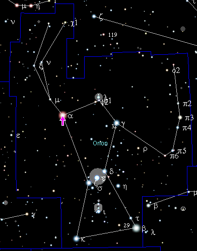

Бетельге́йзе (α Ориона, α Ori) — яркая звезда в созвездии Ориона. Красный сверхгигант, интенсивно теряющий газ из атмосферы, полуправильная переменная звезда, блеск которой изменяется от 0,0 до 1,3 звёздной величины[5] и в среднем составляет около 0,6m[6]. Красный цвет звезды, легко заметный при наблюдениях невооружённым глазом, соответствует показателю цвета B-V = 1,86m. Минимальная светимость Бетельгейзе больше светимости Солнца в 80 тысяч раз, а максимальная — в 105 тысяч раз[7]. Определение точного расстояния до Бетельгейзе осложняется тем, что её годичный параллакс значительно меньше углового диаметра диска звезды. По оценке 2020 года, расстояние до звезды составляет 168 парсек с точностью −15/+27 парсек (приблизительно от 499 до 636 световых лет)[8]. Угловой диаметр Бетельгейзе, по оценке 2017 года, составляет около 0,044 угловой секунды[8]. Это одна из крупнейших среди известных астрономам звёзд: если её поместить на место Солнца, то при минимальном предполагаемом размере она заполнила бы орбиту Марса, а при максимальном — достигала бы орбиты Юпитера.
Масса Бетельгейзе составляет приблизительно 17 солнечных масс[2]. Возможно, имеет близкий спутник. Наблюдаются изменения блеска малой амплитуды с периодами от 150 до 450 суток. Является переменной звездой, при пульсациях существенно меняется её диаметр и блеск[5].
Происхождение названия
Общепринятой[7] является версия о том, что название происходит искажением араб. يد الجوزاء (Яд аль-Джауза, «рука Близнеца», точнее, центрального или сопряжённого эпитета, означавшего созвездия и Близнецы, и Орион). Название Бетельгейзе также переводят как дом близнецов, но этот вариант основан на ошибке. В арабской астрономии Орион иногда назывался Близнецы; это название не следует путать с современным созвездием Близнецы. В Средние века первая буква арабского названия «й» (ﻳ, с двумя точками) могла быть неправильно прочитана как «б» (ﺑ, с одной точкой), и название транслитерировали в лат. Bedalgeuze. Позже, в эпоху Ренессанса, стали считать, что имя было первоначально написано как «Бейт аль-Джауза», что, по всей видимости, должно означать подмышка близнеца на арабском языке. Это привело к современному звучанию, однако фактически к такому переводу могло привести араб. ابط ([ибт], «подмышка»)[9]. А в 1963 году Ричард Хинкли Ален повторно по ошибке записал оригинальное имя как Ibţ al Jauzah[10].
- «Аз-Зира» (араб. الذراع — «рука»),
- «Аль-Манкиб» (араб. المنكب — «плечо»),
- «Аль-Яд аль-Ямна» (араб. اليد اليمنى — «правая рука»),
- «Ардра» (хинди),
- «Баху» (санскрит, «рука»),
- «Башн» (персидский язык, «рука»),
- «Гула» (в долине Евфрата),
- «Клария» (коптский язык, «повязка»).
Основные характеристики
Некоторые особенности Бетельгейзе представляют значительный интерес для астрономов. Это одна из первых звёзд, для которых был измерен видимый с Земли угловой диаметр с помощью астрономического интерферометра: по измерениям Майкельсона и Пиза (13 декабря 1920 года), угловой диаметр Бетельгейзе составляет 0,047"[11]. Впоследствии обнаружили, что он изменяется. Расстояние до Бетельгейзе неизвестно с достаточной точностью, но если оно, как предполагается, составляет 650 световых лет, то диаметр звезды в ходе её пульсаций изменяется от 500 до 800 диаметров Солнца.
Точный диаметр Бетельгейзе нелегко определить, так как её яркость плавно спадает с расстоянием от центра диска; цвет излучения также изменяется в зависимости от этого расстояния. Хотя Бетельгейзе только в 17 раз тяжелее Солнца, её объём больше в 300 миллионов раз.
В настоящее время Бетельгейзе красного цвета. Красноватый её цвет отмечал и Птолемей во II веке н. э. При этом принимая во внимание работу китайских учёных 1978 года[12] есть основания полагать, что живший в I веке до н. э. Сыма Цянь в 27-й главе «Исторических записок» под названием «Трактат о небесных явлениях»[Комм. 1] упомянул Бетельгейзе как образец звезды жёлтого цвета[13]. Если его текст интерпретирован правильно, это может свидетельствовать, что превращение Бетельгейзе в красный гигант состоялось в промежутке между наблюдениями Сыма Цяня и Птолемея[14].
Бетельгейзе стала первой после Солнца звездой, для которой были получены изображения диска и пятен на нём. Они были открыты на изображениях, полученных телескопами, работающими в режиме апертурно-диафрагмальной интерферометрии, а позднее замечены на более детальных изображениях, полученных на телескопе COAST[en][15].
Скорость вращения Бетельгейзе вокруг своей оси составляет около 15 км/с, что значительно больше типичной для красных сверхгигантов скорости вращения. По гипотезе группы астрономов во главе с Дж. Крейгом Уилером из Техасского университета в Остине (США), это объясняется тем, что Бетельгейзе в ходе своей эволюции поглотила обращающуюся вокруг неё звезду массой примерно равной массе Солнца[18][19]. Согласно второй гипотезе, миллионы лет назад Бетельгейзе была выброшена с высокой скоростью из ассоциации OB1 Ориона (движется со скоростью 108 000 км/ч относительно фоновых звёзд в Млечном Пути). Возможно, в тот момент масса Бетельгейзе была в 16 раз больше массы Солнца, а её звёздный компаньон имел массу равную 4 массам Солнца. По мере старения и расширения Бетельгейзе поглотила соседнюю звезду, из-за чего увеличилась скорость её вращения и количество азота в атмосфере Бетельгейзе. Если звезда омолаживалась свежим материалом своего спутника, которого она поглотила, то это могло привести к недооценке возраста Бетельгейзе, а это означает, что она не взорвётся в ближайшей перспективе[20].
Является переменной звездой[5]. Примечателен тот факт, что за время наблюдения с 1993 по 2009 год диаметр звезды уменьшился на 15 %, с 5,5 до приблизительно 4,7 а. е., а к 2011 году — до 4,5 астрономической единицы, и астрономы пока не могут объяснить, с чем это связано[21][22]. При этом яркость звезды не изменилась сколько-нибудь заметно за это время[23][24].
Причины наблюдаемого уменьшения радиуса Бетельгейзе могут быть связаны и с неправильной интерпретацией получаемых данных, например:
- различия в яркости разных участков поверхности звезды; из-за вращения эти неоднородности меняют положение, в результате чего видимый блеск меняется. Эти изменения могут быть приняты за изменения диаметра.
- Моделирование звёзд-сверхгигантов позволяет предположить, что такие звезды могут быть несферичны, похожи на картофелину неправильной формы. Предполагается, что Бетельгейзе может иметь период вращения 18 лет, то есть пока Бетельгейзе наблюдалась орбитальными телескопами на протяжении меньше одного оборота вокруг своей оси[25].
- Возможно, что учёные наблюдают не истинный диаметр звезды, а некий слой плотного молекулярного газа, движения которого и создают видимость изменения истинного размера звезды.
Лауреат нобелевской премии Чарлз Таунс заявил, что планирует продолжать мониторинг Бетельгейзе в надежде найти какую-то систематичность в изменениях диаметра и понять их причину. Для улучшения возможностей наблюдения он планирует использовать специальный спектрометр для интерферометра[26].[значимость факта?]
Вокруг звезды существует газовая туманность, которую долго не удавалось увидеть из-за того, что её затмевает свет звезды[21].
С октября 2019 года яркость звезды снижалась, пока видимая звёздная величина не достигла 07 декабря 2019 года значения +1,12m[27], а в середине декабря — значений +1,273, +1,294 и +1,286m[28].
В декабре 2019 года на снимках, полученных при помощи приёмника SPHERE[en] Очень Большого Телескопа (VLT) Южной Европейской Обсерватории (ESO), удалось заметить изменение формы диска Бетельгейзе. Предположительно, сильное ослабление блеска Бетельгейзе произошло либо после сильного выброса в космическое пространство звёздной пыли, в том числе и по направлению к Земле[29], либо из-за охлаждения поверхности Бетельгейзе после необычайно мощных вспышек активности в её недрах[30]. Пылевые облака вокруг Бетельгейзе, сфотографированные астрономами из Парижской обсерватории (Франция) в декабре 2019 года с помощью спектрометра VLT VISIR в инфракрасном диапазоне, напоминают языки пламени[31].
6 января 2020 года видимая звёздная величина Бетельгейзе достигла значения +1,4m[32]. В январе 2020 года Бетельгейзе потускнела до +1,494m, +1,506m[33][34] и +1,614 +/-0,012m[35], в феврале — до +1,66m[36][37]. С 7 по 13 февраля 2020 года блеск звезды составлял 1,614m. 17, 19 и 20 февраля 2020 блеск Бетельгейзе рос до +1,589m, +1,567m и 1,555m соответственно. 22 февраля 2020 года блеск звезды вырос до +1,522m. Таким образом, нынешний эпизод затухания согласуется с продолжительностью постоянного периода 420—430 дней, присутствующего в предыдущей фотометрии[38].
В июне 2020 года ученые Института астрономии Общества Макса Планка в Германии показали, что Бетельгейзе покрыта гигантскими солнечными пятнами, вызывающими изменение яркости звезды. Это опровергает раннюю гипотезу о выбросах облаков пыли[39][40].
16 июня 2021 астрономы с помощью наземных телескопов подтвердили, что Великое потемнение Бетельгейзе, произошедшее пару лет назад, действительно было вызвано пылевым облаком, образованным в результате выброса плазмы из фотосферы звезды[41][42].
2 декабря 2023 года ожидается покрытие астероидом (319) Леона звезды Бетельгейзе. В зависимости от того, в какой фазе пульсации будет находиться Бетельгейзе, её видимый угловой размер может оказаться как меньше видимого углового размера астероида, так и больше. В первом случае (319) Леона покроет всю звезду, а во втором случае будет наблюдаться частное покрытие[43].
Будущее звезды
Я спан1Наиболее вероятным сценарием окончания эволюции Бетельгейзе является взрыв сверхновой II типа. После взрыва её остатки превратятся в нейтронную звезду массой приблизительно 1.5 M⊙[44].
В случае взрыва, Бетельгейзе может увеличить свою яркость до −9m−12,4m, что сравнимо с блеском полной Луны[44][45]. После взрыва светимость звезды постепенно будет уменьшаться, и в течение нескольких месяцев или лет она перестанет быть видимой невооружённым глазом.
Я спан2Такая вспышка сверхновой будет грандиозным астрономическим событием, но благодаря достаточной удалённости она не представляет угрозы жизни на Земле. Бетельгейзе вряд ли произведёт гамма-всплеск и расположена слишком далеко, чтобы её рентгеновское и ультрафиолетовое излучение могло оказать существенное влияние на Землю[44]. Выброшенному взрывом веществу звезды понадобится 6 миллионов лет, чтобы достичь Солнечной системы. К этому времени вещество будет рассеянным, скорость ударной волны снизится до 13 километров в секунду, и она будет погашена встречным солнечным ветром[46].
Точно предсказать время взрыва Бетельгейзе современная астрономия пока не может. С уверенностью утверждать о его приближении учёные смогли бы лишь за несколько дней до вспышки, по увеличению потока испускаемых Бетельгейзе нейтрино. Поэтому в научно-популярных публикациях речь идёт о том, что Бетельгейзе может взорваться «в любой момент» в течение ближайших 10 000 или, по консервативной оценке, 100 000 лет[47][46].
Вероятность скорого взрыва привлекает к Бетельгейзе большое внимание публики и авторов псевдонаучных публикаций. В 2009 году, из-за недоразумения, вызванного сообщением о 15 % уменьшении звезды, по-видимому её внешней атмосферы[48][49], Бетельгейзе часто становилась предметом слухов о том, что она взорвется в течение года[50][51]. Распространённость этих слухов была связана с различными заблуждениями в астрономии, особенно с предсказаниями о Конце света по календарю майя[52][53].
Слухи о приближающемся взрыве Бетельгейзе возобновились осенью 2019 года в связи с быстрым снижением её видимого блеска, в начале 2020 года упавшего до +1,9 звёздной величины. Это было наиболее сильное падение блеска Бетельгейзе за всю историю регулярных наблюдений с 1910 года. Однако с февраля 2020 года блеск звезды начал восстанавливаться и к апрелю вернулся к прежнему уровню. Точные причины этого явления учёным неизвестны. По словам научного сотрудника группы методов астрономии высокого разрешения САО РАН В. В. Дьяченко, снижение блеска могло быть вызвано как уменьшением светимости звезды из-за происходящих в её недрах процессов, так и затмением её пылевым облаком, выброшенным самой Бетельгейзе в космическое пространство[47].
См. также
- Список крупнейших звёзд
- Список самых ярких звёзд
- Египетский крест (астеризм)